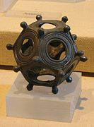
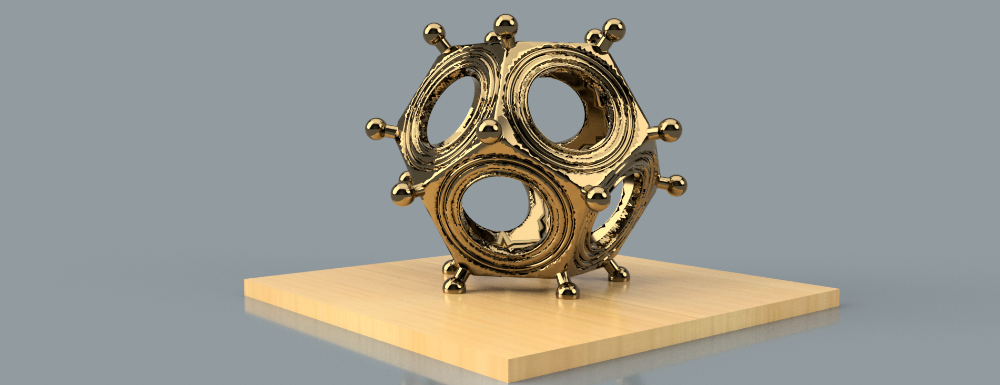
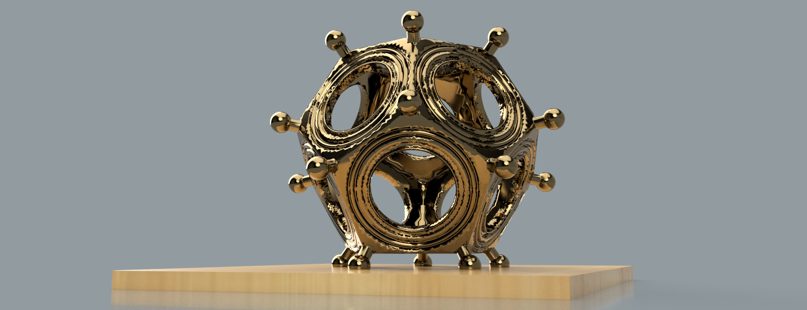
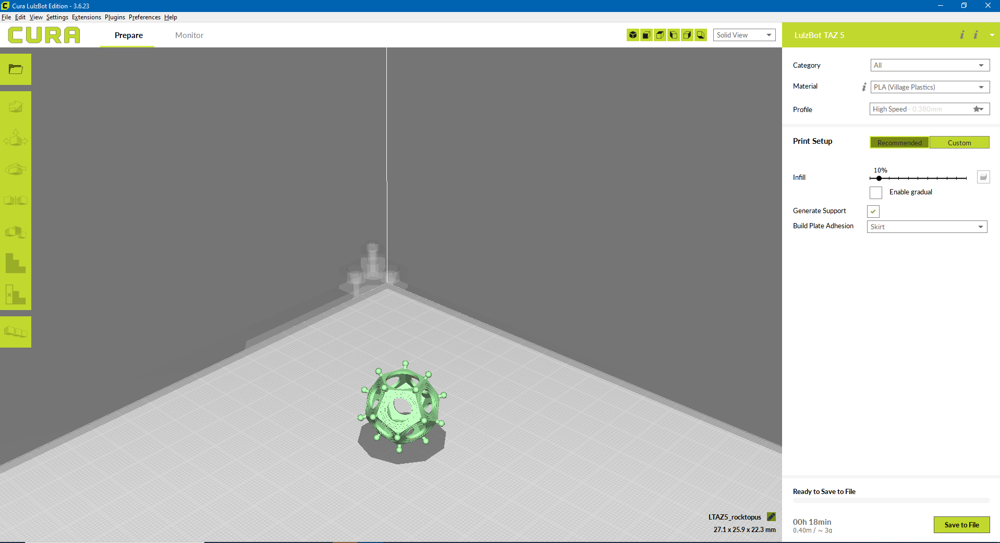
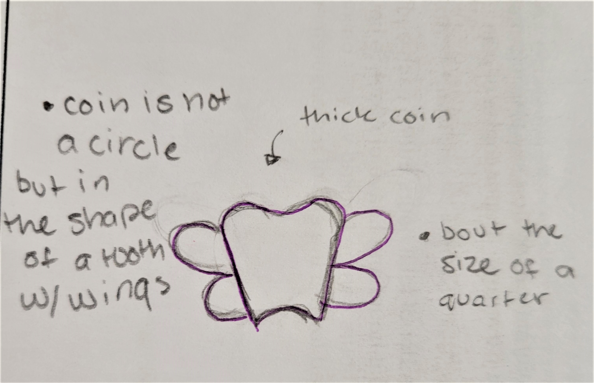
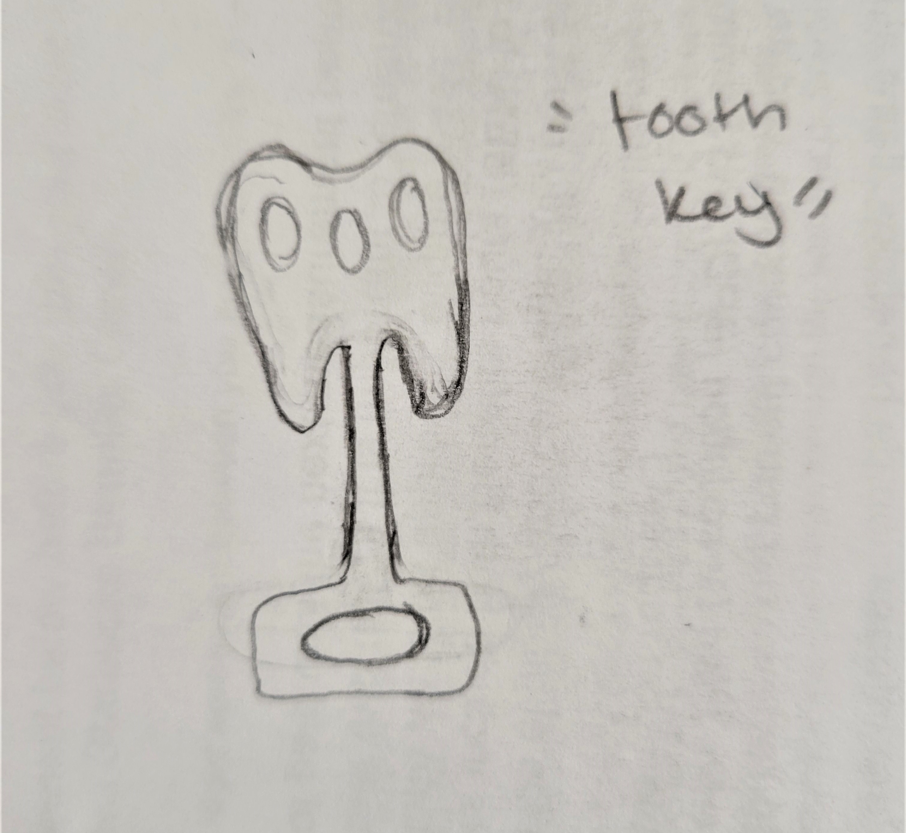

Artifact
Phase 1: Find and Print a Thingiverse Artifact
The artifact I chose for this exersice was a Roman Dodecahedron.
The artifact I chose for this exersice was a Roman Dodecahedron.
Here is the link to the model on Thingiverse
  The model in Cura
Phase 2: The Artifact and Story ; Project Outline
Julie Wei and Jasmin Younis were in my group for this exercise.
Julie:
In a world where the tooth fairy is real, then the tooth fairy would be the equivalent to Bill Gates.
In a world where the tooth fairy is real, then when you turn 16 you can work for the Tooth Fairy.
In a world where the tooth fairy is real, then there would be “Teeth Bandits” stealing people’s teeth.
Suhayla:
If time travel was possible, then things could go well or things could go terribly wrong.
If time travel was possible, Donald Trump wouldn’t have been president in 2016.
If time travel was possible, would there still be a pandemic in 2020?
If time travel was possible, all the world’s mysteries about the past would be solved.
Jasmin:
In a world where art supplies were reasonably priced, then there would be less jokes about the starving artist.
In a world where art supplies were reasonably priced, then people would be more encouraged to make art.
In a world where art supplies were reasonably priced, then the value of art would change.
In a world where art supplies were reasonably priced, new styles of art would emerge.
In a world where art supplies were reasonably priced, then would less people pursue STEM careers?
Phase 3: Rough Images and Story
Artifact Proposal
Artifact Proposal
My first idea for the artifact project is the “molar coin”, “dental token”, “canine coin” (I still haven’t decided on the name yet). The object is based off the idea that the Tooth fairy actually exists and can exchange teeth for money. Since the Tooth Fairy can exchange teeth for money I believe that she would become the new face of wealth and commerce across the globe. A new currency would be established that stands above all existing currency and can be used globally. The size of the coin would be slightly larger than a half dollar coin, but much thicker in width.
My second idea for the artifact project is a “tooth key” that accesses your bank box at the “tooth bank”. The key is designed with the shape of the tooth in mind. In this world the tooth fairy would need time to process and determine the worth of your tooth based on its quality. A person’s earnings they made based off the selling of their tooth is then left in a locked P.O. box in which they need the key to open it
